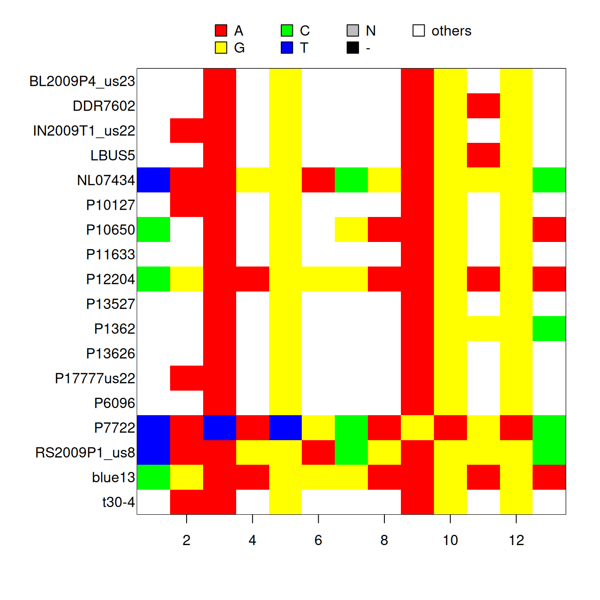
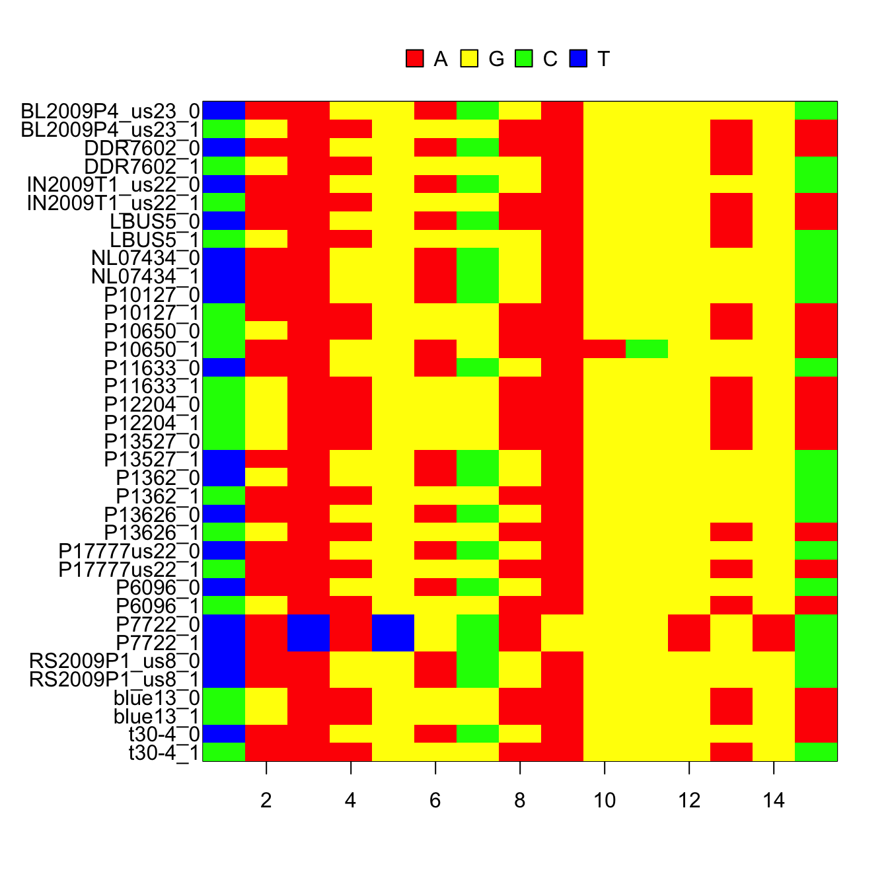

Some applications require the conversion of variant data into sequence data. We’ve provided a conversion from vcfR to a DNAbin object which was created by the R package ape. The DNAbin object can be output to the FASTA format, as well as several others, for conversion to popular file formats recognized by other software. A number of decisions will need to be made in order to facilitate the conversion from vcfR to DNAbin. Here we attempt to address these decisions and convert our vcfR object to a DNAbin object.
We will use the example dataset provided by vcfR.
library(vcfR)
data(vcfR_example)The package ape handles sequence data using objects of class DNAbin. The VCF file only contains information on variant positions. Omitting invariant data provides for a more efficient representation of the data than including the invariant sites. Converting VCF data to sequence data presents a challenge in that these invariant sites may need to be included. This means that these objects can easily occupy large amounts of memory, and may exceed the physical memory when long sequences with many samples are included. In order to accomodate these issues, we’ve taken an approach which attempts to create DNAbin objects from portions of a chomosome, such as a gene. This means we’ll need a little more information than we’ve needed for other conversions. First, we’ll need to locate and read in our VCF file, a reference sequence and a gff file that has the coordinates for a gene.
# Find the files.
vcf_file <- system.file("extdata", "pinf_sc50.vcf.gz", package = "pinfsc50")
dna_file <- system.file("extdata", "pinf_sc50.fasta", package = "pinfsc50")
gff_file <- system.file("extdata", "pinf_sc50.gff", package = "pinfsc50")
# Read in data.
vcf <- read.vcfR(vcf_file, verbose = FALSE)
dna <- ape::read.dna(dna_file, format="fasta")
gff <- read.table(gff_file, sep="\t", quote = "")We can use information from the annotation file (gff) to extract a gene. Here we have specifically chosen one which has variants. We can use IUPAC ambiguity codes to convert heterozygous sites into a one character encoding. This results in a single sequence per individual. Alternatively, we can create two haplotypes for each diploid sample, resulting in two sequences per individual.
record <- 130
# my_dnabin1 <- vcfR2DNAbin(vcf, consensus = TRUE, extract.haps = FALSE,
# gt.split='|', ref.seq=dna[,gff[record,4]:gff[record,5]],
# start.pos=gff[record,4], verbose=FALSE)
my_dnabin1 <- vcfR2DNAbin(vcf, consensus = TRUE, extract.haps = FALSE, ref.seq = dna[,
gff[record, 4]:gff[record, 5]], start.pos = gff[record, 4], verbose = FALSE)
my_dnabin1## 18 DNA sequences in binary format stored in a matrix.
##
## All sequences of same length: 1043
##
## Labels:
## BL2009P4_us23
## DDR7602
## IN2009T1_us22
## LBUS5
## NL07434
## P10127
## ...
##
## Base composition:
## a c g t
## 0.238 0.295 0.272 0.194We can visualize the variable sites using tools from the package ‘ape.’
par(mar=c(5,8,4,2))
ape::image.DNAbin(my_dnabin1[,ape::seg.sites(my_dnabin1)])
par(mar=c(5,4,4,2))Here, the ambiguous sites are visualized as ‘other.’ While the DNAbin object can include the ambiguity codes, not all downstream software handle these codes well. So the user should excercise prudence when using this option.
If we instead create two haplotypes for each diploid sample, it results in a DNAbin object which includes only unambiguous nucleotides(A, C, G and T). This typically requires the data to be phased (I use beagle4). In VCF files this is indicated by delimiting the alleles of the genotype with a pipe (‘|’) for phased data, while unphased data are delimited with a forward slash (‘/’).
# my_dnabin1 <- vcfR2DNAbin(vcf, consensus=FALSE, extract.haps=TRUE,
# gt.split='|', ref.seq=dna[,gff[record,4]:gff[record,5]],
# start.pos=gff[record,4], verbose=FALSE)
my_dnabin1 <- vcfR2DNAbin(vcf, consensus = FALSE, extract.haps = TRUE, ref.seq = dna[,
gff[record, 4]:gff[record, 5]], start.pos = gff[record, 4], verbose = FALSE)par(mar=c(5,8,4,2))
ape::image.DNAbin(my_dnabin1[,ape::seg.sites(my_dnabin1)])
par(mar=c(5,4,4,2))Once we have a DNAbin object, it can be analysed in a number of R packages, such as ape and pegas. We can also output a fasta file for other softwares to use.
write.dna( my_dnabin1, file = 'my_gene.fasta', format = 'fasta' )
unlink('my_gene.fasta') # Clean up after we're done with the example.Also see:
Copyright © 2017 Brian J. Knaus. All rights reserved.
USDA Agricultural Research Service, Horticultural Crops Research Lab.